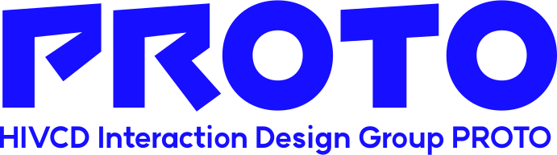

To be pro,
We are PROTO.
We are born to be pro.
2017년에 창설된 PROTO는 인터랙션 디자인을 공부하는 홍익대학교 시각디자인과 학술 소모임입니다.
기술과 디자인 모두에 대한 이해를 바탕으로, 일상적으로 접하는 수많은 디지털 매체들에 다층적으로 접근 가능한 경로를 열어내고 구현합니다.
We explore various fields.
PROTO's Activities
매년 PROTO에서는 분기별로 다양한 활동을 진행합니다.
함께 탐구하고, 결과물을 만들고, 사람들에게 선보이며 끊임없이 도전합니다.
분기별로 주 1회 정기적으로 세션을 진행합니다. 각종 인터랙션 분야별 강의, 전시 참가자별 피드백 등이 이루어집니다.
정규 세션 이외에도, 심화 내용을 함께 연구하는 스터디를 분기별로 자유롭게 진행합니다. 부원 간의 네트워킹과 지식 공유를 할 수 있습니다.
각자가 탐구해온 인터랙션 지식을 기반으로 웹·앱, XR, 미디어아트 등 다양한 결과물을 만듭니다. 기술을 어려워하지 않고 더 쉽게 접근하고자 노력합니다.
PROTO는 매년 홍익대학교 시각디자인과 소모임 축제주간 SISO에 참가하며, 그 외에도 자체적으로 연 1~2회 전시를 엽니다. 그간의 결과물을 전시하고, 전시 전체 디렉팅에 있어서도 관람자의 능동적인 참여를 끌어내는 방법을 연구합니다.
PROTO는 소모임 선배님 혹은 외부 연사분들을 초청하여 다양한 워크숍·세미나를 진행합니다. 인터랙션 디자인에 대한 각종 인사이트를 얻고, 함께 참여해보고, 결과물을 만들어볼 수 있습니다.
학술 활동 외에도 신입부원 웰컴키트 제작, MT 등의 각종 행사를 통해 부원들 간의 친목을 도모합니다. 공통의 관심사를 가진 학우들과 교류하며 함께 발전합니다.
Sponsor
프로토는 ZUZU 코드박스의 지원을 받아 활동합니다.